![]()
?plotstarting httpd help server ... doneR and RStudioR is a programming language for statistical computing and data visualization that serves as an open source alternative to commercial statistical packages such as Stata or SPSS. This workshop will give you a basic overview of R functions, data wrangling, and using RStudio. We will also cover how to troubleshoot the inevitable difficulties that come with coding in any programming language.
Our 4-hour session will be split into two parts:
R Basics (arithmetic, logical operators, objects, installing packages, working with data frames, basic data visualization)tidyverse packages: dplyr, tidyrRThe key to learning R is: Google! This workshop will give you an overview over basic R functions, but to really learn R you will have to actively use it yourself, trouble shoot, ask questions, and Google! The R mailing list and other help pages such as http://stackoverflow.com offer a rich archive of questions and answers by the R community. For example, if you google “recode data in r” you will find a variety of useful websites explaining how to do this on the first page of the search results. Also, don’t be surprised if you find a variety of different ways to execute the same task.
RStudio also has a useful help menu. In addition, you can get information on any function or integrated data set in R through the console, for example:
?plotstarting httpd help server ... doneIn addition, there are a lot of free R resources. Some of my favorites include:
To execute a single line of code. In RStudio, with the cursor in the line you want R to execute,
Cmd + Return (on macOS) or Ctrl + Enter (on Windows).To execute multiple lines of code at once, highlight the respective portion of the code, then run it using one of the operations above.
To execute an entire R script,
Cmd + Shift + S (on macOS) or Ctrl + Shift + S (on Windows)Let’s practice this by running the 00_packages.R script that we will need for coding exercises in this workshop!
RYou can use R as a calculator!
| Operator | Example | |
|---|---|---|
| Addition | + |
2+4 |
| Subtraction | - |
2-4 |
| Multiplication | * |
2*4 |
| Division | / |
4/2 |
| Exponentiation | ^ |
2^4 |
| Square Root | sqrt() |
sqrt(144) |
| Absolute Value | abs() |
abs(-4) |
4*9[1] 36sqrt(144)[1] 12Just like any regular calculator, you have to pay attention to the order of operations. For example:
6 * 8 - sqrt(7) + abs(-10)[1] 55.354256 * (8 - sqrt(7)) + abs(-10)[1] 42.12549| Operator | |
|---|---|
| Less than | < |
| Less than or equal to | <= |
| Greater than | > |
| Greater than or equal to | >= |
| Exactly equal to | == |
| Not equal to | != |
Not x |
!x |
x or y |
x | y |
x and y |
x & y |
Logical operators are incredibly helpful for any type of exploratory analysis, data cleaning and/or visualization task.
4 > 2[1] TRUE4 <= 2[1] FALSER stores information as an object. You can name objects whatever you like. Just remember to not use names that are reserved for build-in functions or functions in the packages you use, such as sum, mean, or abs. Most of the time, R will let you use these as names, but it leads to confusion in your code.
A few things to remember
$ or %. Common symbols that are used in variable names include . or _.R is case sensitive.<-. Sometimes you will also see = as the assignment operator. This is a matter of preference and subject to debate among R programmers. Personally, I use <- to assign values to objects and = within functions.# symbol is used for commenting and demarcation. Any code following # will not be executed.Below, R stores the result of the calculation in an object named result. We can access the value by referring to the object name.
result <- 5/3
result[1] 1.666667If we assign a different value to the object, the value of the object will be changed.
result <- 5-3
result[1] 2R can deal with a variety of data types, including vectors, scalars, matrices, data frames, and lists. First, we focus on vectors.
A vector is one of the simplest type of data you can work with in R. “A vector or a one-dimensional array simply represents a collection of information stored in a specific order” (Imai 2017: 14). It is essentially a list of data of a single type (either numerical, character, or logical).
To create a vector, we use the function c() (“concatenate”) to combine separate data points. The general format for creating a vector in R is as follows: name_of_vector <- c("what you want to put into the vector") Suppose we have data on the population in millions for the five most populous countries in 2016. The data come from the World Bank.
pop1 <- c(1379, 1324, 323, 261, 208)
pop1[1] 1379 1324 323 261 208We can use the function c() to combine two vectors. Suppose we had data on 5 additional countries.
pop2 <- c(194, 187, 161, 142, 127)
pop <- c(pop1, pop2)
pop [1] 1379 1324 323 261 208 194 187 161 142 127There are four main variable types you should be familiar with:
TRUE and FALSE values.First, lets check which variable type our population data were stored in. The output below tells us that the object pop is of class numeric, and has the dimensions [1:10], that is 10 elements in one dimension.
str(pop) num [1:10] 1379 1324 323 261 208 ...Suppose, we wanted to add information on the country names. We can enter these data in character format. To save time, we will only do this for the five most populous countries.
cname <- c("CHN", "IND", "USA", "IDN", "BRA")
str(cname) chr [1:5] "CHN" "IND" "USA" "IDN" "BRA"Now, lets code a logical variable that shows whether the country is in Asia or not. Note that R recognizes both TRUE and T (and FALSE and F) as logical values.
asia <- c(TRUE, TRUE, F, T, F)
str(asia) logi [1:5] TRUE TRUE FALSE TRUE FALSELastly, we define a factor variable for the regime type of a country in 2016. This variable can take on one of four values, based on data from the Economist Intelligence Unit (2020): Full Democracy, Flawed Democracy, Hybrid Regimes, and Autocracy. Note that empirically, we don’t have a “hybrid category” here. We could define an empty factor level, but we will skip this step here.
regime <- c("Autocracy", "FlawedDem", "FullDem", "FlawedDem", "FlawedDem")
regime <- as.factor(regime)
str(regime) Factor w/ 3 levels "Autocracy","FlawedDem",..: 1 2 3 2 2Data types are important! R will not perform certain operations if you don’t get the variable type right. The good news is that we can switch between data types. This can sometimes be tricky, especially when you are switching from a factor to a numerical type1. We won’t go into this too much here; just remember: Google is your friend!
Let’s convert the factor variable regime into a character. Also, for practice, lets convert the asia variable to character and back to logical.
regime <- as.character(regime)
str(regime) chr [1:5] "Autocracy" "FlawedDem" "FullDem" "FlawedDem" "FlawedDem"asia <- as.character(asia)
str(asia) chr [1:5] "TRUE" "TRUE" "FALSE" "TRUE" "FALSE"asia <- as.logical(asia)
str(asia) logi [1:5] TRUE TRUE FALSE TRUE FALSEExercise 1: Why won’t R let us do the following?
no_good <- (a,b,c)
no_good_either <- c(one, two, three)
Exercise 2: What is the class of the following vector?
vec <- c("1", "2", "3")You can do a variety of things like have R print out particular values or ranges of values in a vector, replace values, add additional values, etc. We will not get into all of these operations today, but be aware that (for all practical purposes) if you can think of a vector manipulation operation, R can probably do it.
We can do arithmetic operations on vectors! Let’s use the vector of population counts we created earlier and double it.
pop1[1] 1379 1324 323 261 208pop1_double <- pop1 * 2
pop1_double[1] 2758 2648 646 522 416Exercise 4: What do you think this will do?
pop1 + pop2Exercise 5: And this?
pop_c <- c(pop1, pop2)There are a number of special functions that operate on vectors and allow us to compute measures of location and dispersion of our data.
| Function | |
|---|---|
min() |
Returns the minimum of the values or object. |
max() |
Returns the maximum of the values or object. |
sum() |
Returns the sum of the values or object. |
length() |
Returns the length of the values or object. |
mean() |
Returns the average of the values or object. |
median() |
Returns the median of the values or object. |
var() |
Returns the variance of the values or object. |
sd() |
Returns the variance of the values or object. |
min(pop)[1] 127max(pop)[1] 1379mean(pop)[1] 430.6Exercise 6: Using functions in R, how else could we compute the mean population value?
[1] 430.6There are many ways to access elements that are stored in an object. Here, we will focus on a method called indexing, using square brackets as an operator.
Below, we use square brackets and the index 1 to access the first element of the top 5 population vector and the corresponding country name vector.
pop1[1][1] 1379cname[1][1] "CHN"We can use indexing to access multiple elements of a vector. For example, we can use indexing to implicitly print the second and fifth elements of the population and the country name vectors, respectively.
pop[c(2,5)][1] 1324 208cname[c(2,5)][1] "IND" "BRA"We can assign the first element of the population vector to a new object called first.
first <- pop[1]Below, we make a copy of the country name vector and delete the last element. Note, that we can use the length() function to achieve the highest level of generalizability in our code. Using length(), we do not need to know the index of the last element of out vector to drop the last element.
cname_copy <- cname
## Option 1: Dropping the 5th element
cname_copy[-5][1] "CHN" "IND" "USA" "IDN"## Option 2 (for generalizability): Getting the last element and dropping it.
length(cname_copy)[1] 5cname_copy[-length(cname_copy)][1] "CHN" "IND" "USA" "IDN"Indexing can be used to alter values in a vector. Suppose, we notice that we wrongly entered the second element of the regime type vector (or the regime type changed).
regime[1] "Autocracy" "FlawedDem" "FullDem" "FlawedDem" "FlawedDem"regime[2] <- "FullDem"
regime[1] "Autocracy" "FullDem" "FullDem" "FlawedDem" "FlawedDem"Exercise 7: We made even more mistakes when entering the data! We want to subtract 10 from the third and fifth element of the top 5 population vector. How would you do it?
The myriad of functions that are either built-in to base R or parts of user-written packages are the greatest strength of R. For most applications we encounter in our daily programming practice, R already has a function, or someone smart wrote one. Below are a few additional helpful functions from base R.
| Function | |
|---|---|
seq() |
Returns sequence from input1 to input2 by input3. |
rep() |
Repeats input1 input2 number of times. |
names() |
Returns the names (labels) of objects. |
which() |
Returns the index of objects. |
Let’s create a vector of indices for our top 5 population data.
cindex <- seq(from = 1, to = length(pop1), by = 1)
cindex[1] 1 2 3 4 5Suppose we wanted to only print a sequence of even numbers between 2 and 10. We can do so by adjusting the by operator.
seq(2, 10, 2)[1] 2 4 6 8 10We can use the rep() function to repeat data.
rep(30, 5)[1] 30 30 30 30 30Suppose, we wanted to record whether we had completed the data collection process for the top 10 most populous countries. First, suppose we completed the process on every second country.
completed <- rep(c("yes","no"), 5)
completed [1] "yes" "no" "yes" "no" "yes" "no" "yes" "no" "yes" "no" Now suppose that we have completed the data collection process for the first 5 countries, but not the latter 5 countries (we don’t have their names, location, or regime type yet).
completed2 <- rep(c("yes","no"), each = 5)
completed2 [1] "yes" "yes" "yes" "yes" "yes" "no" "no" "no" "no" "no" We can give our data informative labels. Let’s use the country names vector as labels for our top 5 population vector.
names(pop1)NULLcname[1] "CHN" "IND" "USA" "IDN" "BRA"names(pop1) <- cname
names(pop1)[1] "CHN" "IND" "USA" "IDN" "BRA"pop1 CHN IND USA IDN BRA
1379 1324 323 261 208 We can use labels to access data using indexing and logical operators. Suppose, we wanted to access the population count for Brazil in our top 5 population data.
pop1[names(pop1) == "BRA"]BRA
208 Exercise 9 Access all top 5 population ratings that are greater or equal than the mean value of population ratings.
[1] 699 CHN IND
1379 1324 Exercise 10 Access all top 5 population ratings that are less than the population of the most populous country, but not the US.
IND IDN BRA
1324 261 208 We did not work with data frames yet, but remember that our data input is ordered. The first element of the pop1 vector corresponds with the first element of the cname, regime, and asia vectors. We can use this to run more sophisticated queries on our data.
Suppose, we wanted to know the regime type of Indonesia. Given that our vectors are ordered, we can use indexing to extract the data. First, lets see what happens if we run a simple logical query.
cname == "IDN"[1] FALSE FALSE FALSE TRUE FALSEregime[cname == "IDN"][1] "FlawedDem"We can also use the which() function that returns the index of the vector element.
which(cname == "IDN")[1] 4regime[which(cname == "IDN")][1] "FlawedDem"Using logical statements, we can run more complex queries. Below, we print the population count for all Asian countries within the top 5 most populous countries that are not autocracies.
pop1[asia == T & regime != "Autocracy"] IND IDN
1324 261 RSo far, we have only used functions that are already built into R. One of the greatest strengths of R is its massive collection of user-written packages that contain task-specific functions. The official repository for R packages, CRAN, currently records 15365 packages,2 with many more under development.
If a package is available on CRAN, you can install it in two ways.
install.packages("packagename"), where packagename should be replaced with the name of the desired package.Below, we will use use the here package to find and import a .csv file. To make the here package available for use, install it and then use the library() command to load it. While packages need to be installed only once, the library() command needs to be run every time you want to use a particular package.
Package managers (e.g. pacman) can also be used to install and load packages. An example use case of pacman can be seen in our first script 00_packages.R, which we ran earlier in the workshop.
here() starts at C:/Users/kohal/Documents/GitHub/bgts-workshop-r-introMost data formats we commonly use are not native to R and need to be imported. Luckily, there is a variety of packages available to import just about any non-native format.
In this example, we will use a subset of data from the Armed Conflict Location & Event Data Project (ACLED), which offers real-time data and analysis on political violence and protests around the world. The ACLED_countries.csv dataset includes the count of riot and protest events from January 2000 to December 2019 for many countries.3
Below, we read the data using the read.csv() command.
mydata <- read.csv(here("ACLED_countries.csv"),
stringsAsFactors = F) # ensure string vars are not automatically imported as factors Let’s find out what these data look like. First, use the str() function to explore the variable names and which data class they are stored in. Note: int stands for integer and is a special case of the class numeric.
str(mydata)'data.frame': 103 obs. of 5 variables:
$ country : chr "Afghanistan" "Albania" "Algeria" "Angola" ...
$ region : chr "Southern Asia" "Europe" "Northern Africa" "Middle Africa" ...
$ nconflicts : int 40765 582 7362 1108 3118 12627 1861 16802 293 215 ...
$ nconflict_no_fatalities: int 23946 581 5321 728 3110 12578 1846 13114 293 165 ...
$ fatalities : int 119973 1 8451 13788 8 59 22 4640 0 114 ...If we are only interested in what the variables are called, we can use the names() function.
names(mydata)[1] "country" "region"
[3] "nconflicts" "nconflict_no_fatalities"
[5] "fatalities" We can alter the names of vectors by using the names() function and indexing. Because data frames are essentially just combinations of vectors, we can do the same for variable names inside data frames. Suppose we want to change the variable nconflicts.
names(mydata)[3] <- "nconflict"
names(mydata)[1] "country" "region"
[3] "nconflict" "nconflict_no_fatalities"
[5] "fatalities" We can use the summary() function to get a first look at the data.
summary(mydata) country region nconflict
Length:103 Length:103 Min. : 1.0
Class :character Class :character 1st Qu.: 315.5
Mode :character Mode :character Median : 1250.0
Mean : 6216.3
3rd Qu.: 5993.5
Max. :70734.0
nconflict_no_fatalities fatalities
Min. : 1 Min. : 0.0
1st Qu.: 289 1st Qu.: 17.5
Median : 1037 Median : 236.0
Mean : 4667 Mean : 9543.3
3rd Qu.: 4536 3rd Qu.: 7020.0
Max. :63665 Max. :119973.0 A data frame has two dimensions: rows and columns.
nrow(mydata) # Number of rows[1] 103ncol(mydata) # Number of columns[1] 5dim(mydata) # Rows first then columns.[1] 103 5As a rule, whenever we use two-dimensional indexing in R, the order is: [row, column]. To access the first row of the data frame, we specify the row we want to see and leave the column slot following the comma empty.
mydata[1, ] country region nconflict nconflict_no_fatalities fatalities
1 Afghanistan Southern Asia 40765 23946 119973We can use the concatenate function c() to access multiple rows (or columns) at once. Let’s print out the first and second row of the dataframe.
mydata[c(1,2), ] country region nconflict nconflict_no_fatalities fatalities
1 Afghanistan Southern Asia 40765 23946 119973
2 Albania Europe 582 581 1We can also access a range of rows by separating the minimum and maximum value with a :. Let’s print out the first five rows of the dataframe.
mydata[1:5,] country region nconflict nconflict_no_fatalities
1 Afghanistan Southern Asia 40765 23946
2 Albania Europe 582 581
3 Algeria Northern Africa 7362 5321
4 Angola Middle Africa 1108 728
5 Armenia Caucasus and Central Asia 3118 3110
fatalities
1 119973
2 1
3 8451
4 13788
5 8If we try to access a data point that is out of bounds, R returns the value NULL.
mydata[3,7]NULLExercise 1 Access the element of the dataframe mydata that is stored in row 1, column 1.
[1] "Afghanistan"Exercise 2 Access the element of the data frame mydata that is stored in column 3, row 100.
[1] 503$ operatorThe $ operator in R is used to specify a variable within a data frame. This is an alternative to indexing.
mydata$nconflict [1] 40765 582 7362 1108 3118 12627 1861 16802 293 215 459 52
[13] 765 2105 7760 1919 2621 4625 912 411 312 14519 112 10260
[25] 50 191 190 5122 215 197 1446 858 1312 1121 151 67561
[37] 3371 5708 22354 1580 1838 491 374 6427 289 39 319 41
[49] 2956 83 1294 8857 1365 512 384 3193 598 444 213 2177
[61] 1250 9070 682 5143 971 15011 275 9 54496 6568 9690 5
[73] 243 1134 3734 370 6096 963 1275 1079 29667 11667 6227 2
[85] 3855 12528 70734 68 782 7420 321 5756 1 10334 21 4866
[97] 30131 4 102 503 45298 1148 5891table() functionThe table() function can be used to tabularize one or more variables. For example, lets find out how many observations (i.e. individual countries) we have per region.
table(mydata$region)
Caucasus and Central Asia Eastern Africa Europe
8 13 15
Middle Africa Middle East Northern Africa
8 15 7
South-Eastern Asia Southern Africa Southern Asia
8 8 6
Western Africa
15 Using logical operations, we can create more complex tabularizations. For example, below, we show how many countries have above average number of conflict events per region.
summary(mydata$nconflict) Min. 1st Qu. Median Mean 3rd Qu. Max.
1.0 315.5 1250.0 6216.3 5993.5 70734.0 table(mydata$region, mydata$nconflict > mean(mydata$nconflict))
FALSE TRUE
Caucasus and Central Asia 7 1
Eastern Africa 9 4
Europe 14 1
Middle Africa 7 1
Middle East 10 5
Northern Africa 3 4
South-Eastern Asia 5 3
Southern Africa 7 1
Southern Asia 2 4
Western Africa 14 1Exercise 3: How would you access all elements of the variable country using indexing rather than the $ operator?
[1] "Afghanistan" "Albania" "Algeria" "Angola" "Armenia"
[6] "Azerbaijan" [1] "Afghanistan" "Albania" "Algeria" "Angola" "Armenia"
[6] "Azerbaijan" Exercise 4: How would you find the maximum value for number of events using the $ operator?
[1] 70734Exercise 5: Print the country that corresponds to the maximum world population value using the $ operator and indexing!
[1] "Syria"Exercise 6: Print out every second element from the variable country using indexing methods and the sequence function seq().
[1] "Afghanistan" "Algeria" "Armenia"
[4] "Bahrain" "Belarus" "Bosnia and Herzegovina"RNA is how R denotes missing values. For certain functions, NAs cause problems.
vec <- c(4, 1, 2, NA, 3)
mean(vec) #Result is NA![1] NAsum(vec) #Result is NA![1] NAWe can tell R to remove the NA and execute the function on the remainder of the data.
mean(vec, na.rm = T)[1] 2.5sum(vec, na.rm = T)[1] 10First, lets add another observation to the data. Suppose we wanted to add an observation for Germany, which will be a missing value. We can use the same operations we used for vectors to add data. Here, we will use the rbind() function to do so. rbind() stands for “row bind.” Save the output in a new data frame!
obs <- c("Germany", "Europe", NA, NA, NA)
mydata_new <- rbind(mydata, obs)
dim(mydata_new)[1] 104 5We can also create new variables that use information from the existing data. If we know the number of conflict events without fatalities by country, we can calculate the number of conflict events with fatalities to generate the variable nconflict_fatalities. By using the $ operator, we can directly assign the new variable to the data frame mydata_new.
mydata$nconflict_fatalities <- mydata$nconflict - mydata$nconflict_no_fatalities
head(mydata, 3) #prints out the first 3 rows of the data frame country region nconflict nconflict_no_fatalities fatalities
1 Afghanistan Southern Asia 40765 23946 119973
2 Albania Europe 582 581 1
3 Algeria Northern Africa 7362 5321 8451
nconflict_fatalities
1 16819
2 1
3 2041We could also compute the average number of fatalities per conflict, computed as the sum of fatalities (fatalities variable) divided by the number of conflicts (nconflict variable).
mydata$av_fatalities <- mydata$fatalities/mydata$nconflictSuppose we want to figure out which country in Northern Africa has the highest number of riot and protest events. We can figure this out by first subsetting our dataset to only include countries in the region, then looking up the maximum value for nconflict. Below, we assign the output to a new object called mydata_na.
mydata_na <- mydata[mydata$region == "Northern Africa",]
max(mydata_na$nconflict)[1] 12528mydata_na$country[mydata_na$nconflict == max(mydata_na$nconflict)][1] "Sudan"Suppose we wanted to save this newly created data frame. We have multiple options to do so. If we wanted to save it as a native .RData format, we would run the following command.
# Make sure you specified the right working directory!
# save(mydata, file = here("mydata_new.RData"))Most of the time, however, we would want to save our data in formats that can be read by other programs as well. .csv is an obvious choice.
# write.csv(mydata_new, file = "mydata_new.csv")Today, we will be covering some basics of data visualization in R using the native plotting functions. For more advanced data visualization functions, see the ggplot2 package. While we will not get to this today, the skills we cover with base R and data wrangling/management provide a foundation for picking this up later on in your R learning journey!
| Type | Operator |
|---|---|
| Histogram | hist() |
| Boxplot | boxplot() |
| Kernel density plot | plot(density()) |
| Basic scatterplot | plot() |
We can get an overview of the number of conflict events per country using the boxplot() function. The distribution appears to be highly skewed.
boxplot(mydata$fatalities)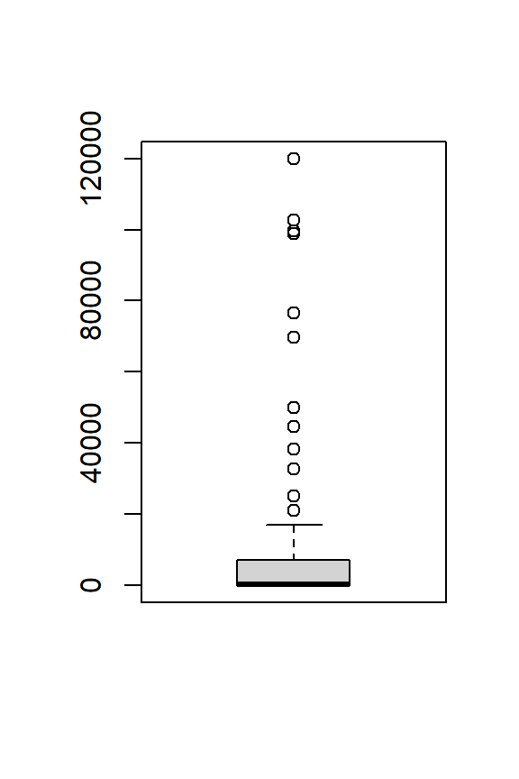
Suppose we wanted to know whether there are on average more fatalities in countries with a higher overall number of conflicts. Let’s first look at the distribution of number of conflicts.
summary(mydata$nconflict) Min. 1st Qu. Median Mean 3rd Qu. Max.
1.0 315.5 1250.0 6216.3 5993.5 70734.0 Create a new dummy (binary) variable that codes whether a state has a relatively high number of conflicts (greater than the median) using the ifelse() function. ifelse() has the following general syntax:
ifelse(condition, value if TRUE, value if FALSE).
median(mydata$nconflict)[1] 1250mydata$nconflict_high <- ifelse(mydata$nconflict > median(mydata$nconflict), 1, 0)
head(mydata$nconflict_high)[1] 1 0 1 0 1 1table(mydata$nconflict_high) # We split the observations (almost) sexactly in half.
0 1
52 51 We can display two indicators in the same boxplot. We can use this feature to answer the question whether states with more conflict events on average see more fatalities (i.e. whether conflicts are not just more numerous but also deadlier).
boxplot(mydata$av_fatalities ~ mydata$nconflict_high)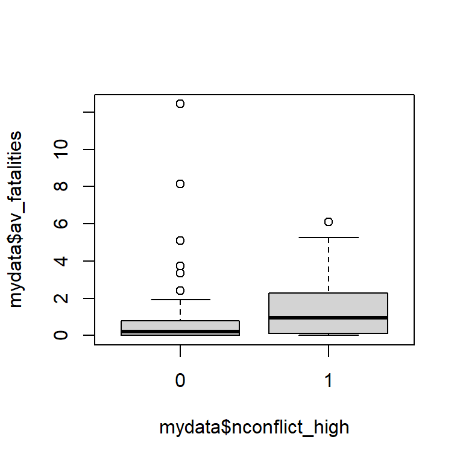
Suppose we wanted to know which region in Africa sees the most fatalities in riots or protests. The %in% operator to subset to a set of values.
table(mydata$region)
Caucasus and Central Asia Eastern Africa Europe
8 13 15
Middle Africa Middle East Northern Africa
8 15 7
South-Eastern Asia Southern Africa Southern Asia
8 8 6
Western Africa
15 africa <- c("Eastern Africa",
"Middle Africa",
"Northern Africa",
"Southern Africa",
"Western Africa")
boxplot(mydata$fatalities[mydata$region %in% africa] ~ mydata$region[mydata$region %in% africa],
cex.axis = 0.6)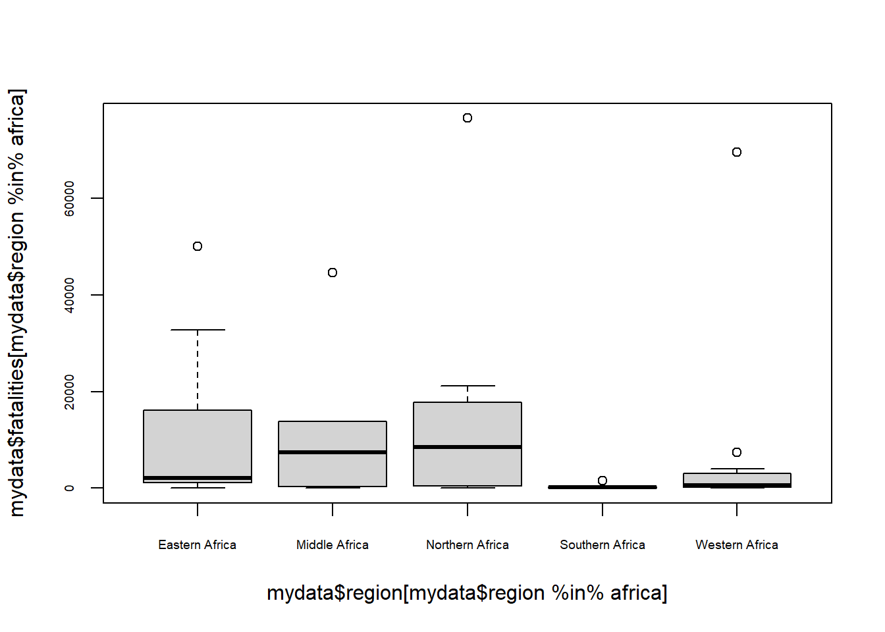
hist(mydata$nconflict, breaks = 100)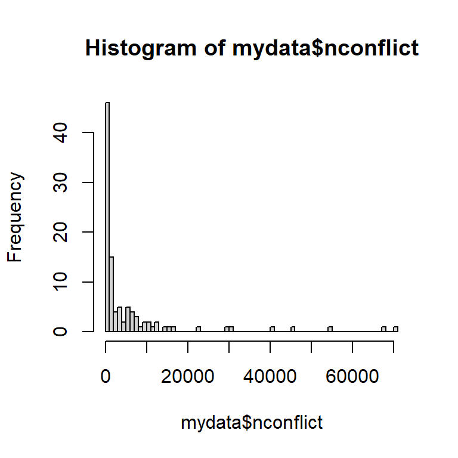
plot(density(mydata$fatalities))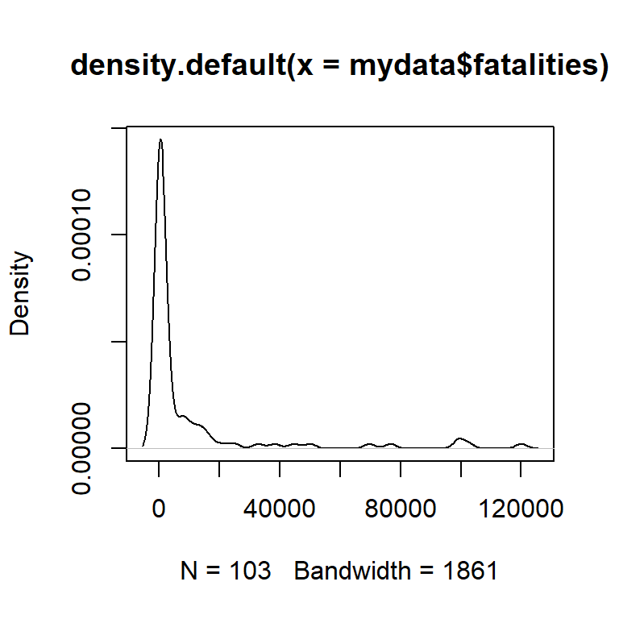
Does the number of fatalities vary with the number of overall conflict events?
plot(mydata$nconflict, mydata$fatalities)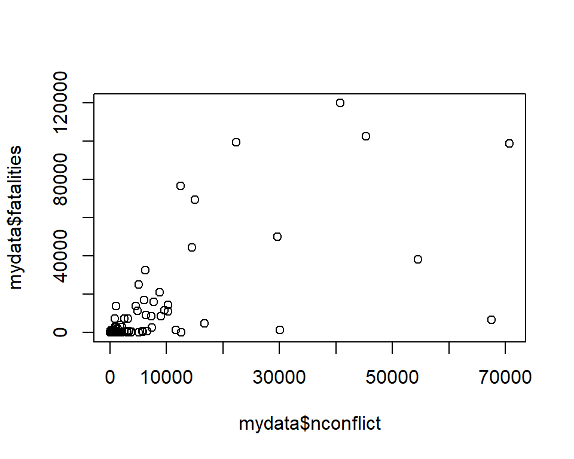
This is really hard to see. We could log-transform both variables to make the relationship clearer. The distribution of the log-transformed variables are less skewed and closer to a normal distribution. Not that logging the variable will drop 8 observations in which the number of protests/riots without fatalities is zero.
length(mydata$nconflict[mydata$nconflict == 0])[1] 0length(mydata$fatalities[mydata$fatalities == 0])[1] 8plot(density(log(mydata$nconflict)))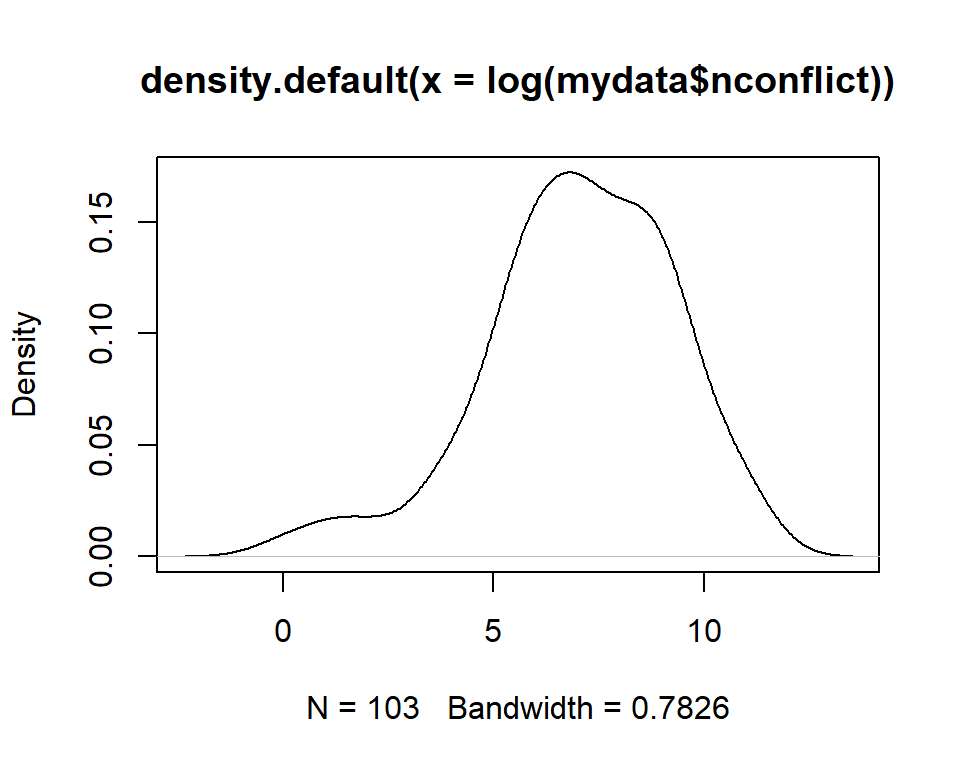
plot(density(log(mydata$fatalities)))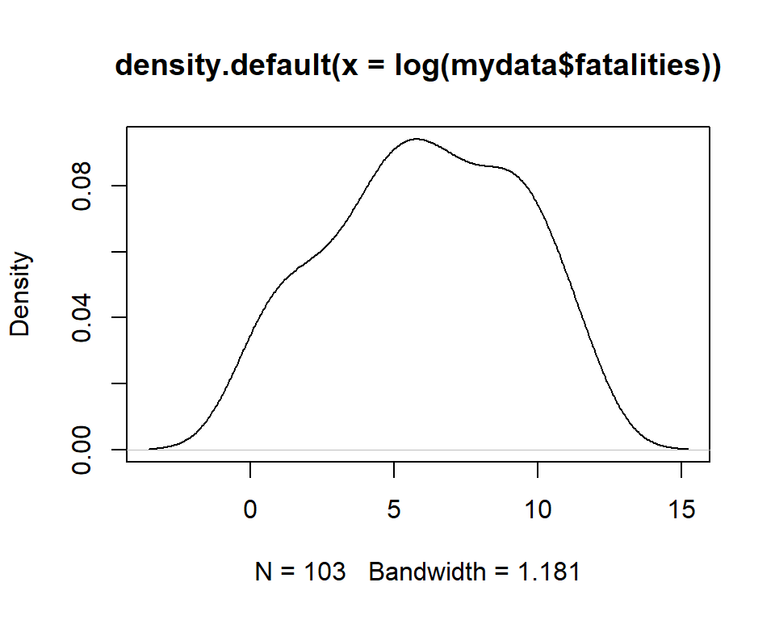
plot(log(mydata$nconflict), log(mydata$fatalities))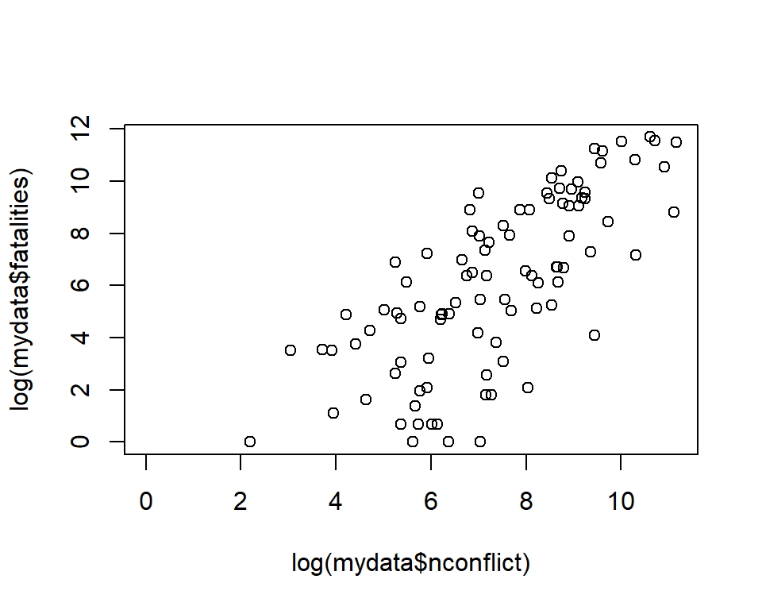
Aside from arguably not being very informative, the scatterplot we created in base R is not very pretty. Let’s give it titles, use color and shapes!
plot(mydata$fatalities, mydata$nconflict,
main = "ACLED (2000-2019)", #Adding a main title.
xlab = "Fatalities", #Adding a x-axis title.
ylab = "Number of Conflicts", #Adding a y-axis title.
col = "tomato", #Changing the color of the data points.
pch = 18) #Changing the shape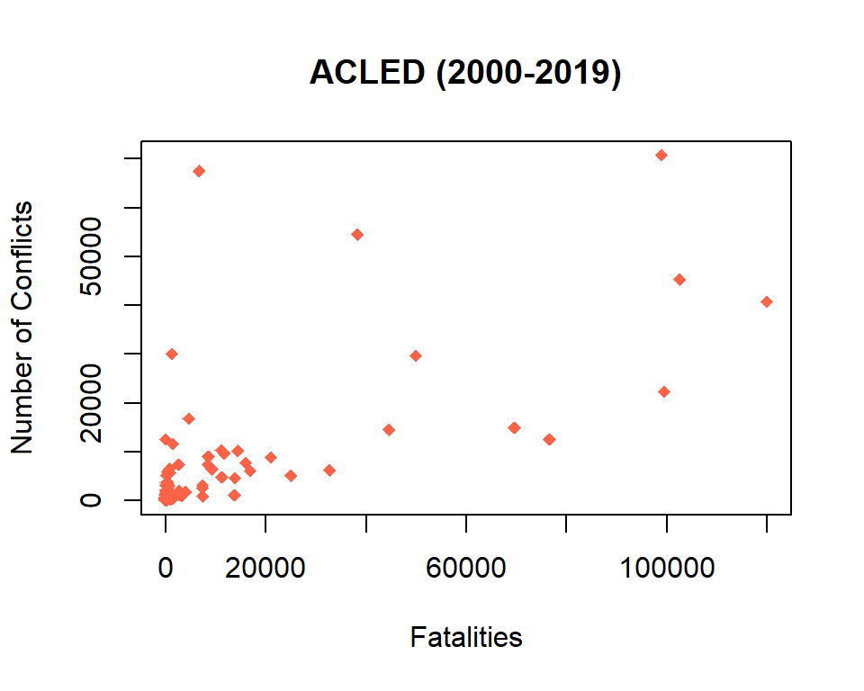
Yeah, ok. Its not much prettier (especially the labeling on the axes), but it is in theory publishable…
A few additional notes on graphical options:
R can display any color in the RBG or HEX system. However it also has a ton of colors that you can just refer to by name, see http://www.stat.columbia.edu/~tzheng/files/Rcolor.pdf.R colors in all their glory: http://www.stat.columbia.edu/~tzheng/files/Rcolor.pdf.tidyverseThe tidyverse is “an opinionated collection of R packages designed for data science. All packages share an underlying design philosophy, grammar, and data structures”.
The core principles of “tidy data” are as follows:
For wide data formats, each unit’s responses are in a single row. For example:
| Country | Area | Pop1990 | Pop1991 |
|---|---|---|---|
| A | 300 | 56 | 58 |
| B | 150 | 40 | 45 |
For long data formats, each row denotes the observation of a unit at a given point in time. For example:
| Country | Year | Area | Pop |
|---|---|---|---|
| A | 1990 | 300 | 56 |
| A | 1991 | 300 | 58 |
| B | 1990 | 150 | 40 |
| B | 1991 | 150 | 45 |
|>Using the pipe operator will make R code faster and more legible, because we are not saving every output in a separate data frame, but passing it on to a new function.
Across different sets of R code you might encounter, you will observe two different types of pipe operators:
%>%), which requires the magrittr tidyverse package, is the original pipe operator. It is commonly used in R scripts that predominantly rely on tidyverse packages, although some may use the new pipe operator out of personal preference.|>) is a recent development in base R, and does not depend on installing or loading any packages. It’s functionally similar to the magrittr pipe, and accommodates code from a variety of packages (and not just the tidyverse ones)tidyrFor this exercise, we will be using the Uppsala Conflict Data Program (UCDP) Conflict Onset data. This data provides country-year level data for armed conflict onsets with the following variables:
gwcode: a numeric vector for the Gleditsch-Ward state codeyear: a numeric vector for the yearsumnewconf: a numeric vector for the sum of new conflicts/conflict-dyadssumonset1: a numeric vector for the sum of new conflict episodes, whether because this is a new conflict or because there is more than one year since last conflict episodesumonset2: a numeric vector for the sum of new conflict episodes, whether because this is a new conflict or because there is more than two years since last conflict episodesumonset3: a numeric vector for the sum of new conflict episodes, whether because this is a new conflict or because there is more than three years since last conflict episodesumonset5: a numeric vector for the sum of new conflict episodes, whether because this is a new conflict or because there is more than five years since last conflict episodesumonset10: a numeric vector for the sum of new conflict episodes, whether because this is a new conflict or because there is more than 10 years since last conflict episodeWe will load it in using the peacesciencer package (Miller 2022).
ucdp_onsets <- peacesciencer::ucdp_onsetsNOTE: The :: operator specifies that we want to use the object ucdp_onsets from the package dplyr. This explicit programming is useful when functions or objects are contained in multiple packages to avoid confusion.
pivot_longer()We use the pivot_longer() function to reshape data from wide to long. In general, the syntax of the data is as follows:
new_df <- pivot_longer(old_df, columns to transform, names_to = "name", values_to = "value")
Let’s transform ucdp_onsets from wide to long.
library(tidyr)
names(ucdp_onsets)[1] "gwcode" "year" "sumnewconf" "sumonset1" "sumonset2"
[6] "sumonset3" "sumonset5" "sumonset10"onsets_long <- pivot_longer(
ucdp_onsets,
sumnewconf:sumonset10, # we will go over selecting multiple columns shortly!
names_to = "variable",
values_to = "sum_onsets"
)
head(onsets_long)# A tibble: 6 x 4
gwcode year variable sum_onsets
<dbl> <dbl> <chr> <dbl>
1 2 1946 sumnewconf 0
2 2 1946 sumonset1 0
3 2 1946 sumonset2 0
4 2 1946 sumonset3 0
5 2 1946 sumonset5 0
6 2 1946 sumonset10 0pivot_wider()Suppose we wanted to revert our operation (or generally shape data from a long to a wide format), we can use tidyr’s pivot_wider() function. The syntax is similar to pivot_longer().
new_df <- pivot_wider(old_df, names_from = key, values_from = value),
where key refers to the column which contains the values that are to be converted to column names and value specifies the column that contains the values which is to be stored in the newly created columns.
Below, we semi-revert the creation of a single column containing the variable types and a single column containing our variable values.
names(onsets_long)[1] "gwcode" "year" "variable" "sum_onsets"onsets_wide <- onsets_long |>
pivot_wider(names_from = variable,
values_from = sum_onsets)
head(onsets_wide) # looks like the original one! # A tibble: 6 x 8
gwcode year sumnewconf sumonset1 sumonset2 sumonset3 sumonset5 sumonset10
<dbl> <dbl> <dbl> <dbl> <dbl> <dbl> <dbl> <dbl>
1 2 1946 0 0 0 0 0 0
2 2 1947 0 0 0 0 0 0
3 2 1948 0 0 0 0 0 0
4 2 1949 0 0 0 0 0 0
5 2 1950 1 1 1 1 1 1
6 2 1951 0 0 0 0 0 0dplyrTransforming and combining data from different sources into formats suitable for statistical analysis and visualization lies at the heart of the data science workflow. In many data science applications, an estimated 50% to 80% of a project is spent on data collection, cleaning, and wrangling. Beyond getting into the right shape with tidyr, dplyr is home to many of the common data management functions. Together with lubridate (working with date/time objects) and stringr (string operations using regular expressions), these packages offer functionality for the majority of data cleaning and reshaping task in R.4
RStudio has a number of great cheat sheets available online: https://rstudio.com/resources/cheatsheets/. Check out the “Data transformation with dplyr cheat sheet!
For the exercises that follow, we will be using data from the Uppsala Conflict Data Project (UCDP) Armed Conflict Data (ACD) (Gleditsch et al. 2002; Therése Pettersson, Högbladh, and Öberg 2019). The data comprises of the following variables:
conflict_id: a conflict identifier, not to be confused with an episode identifier (which I don’t think UCDP offers)year: a numeric vector for the yeargwno_a: the Gleditsch-Ward state code for the state on side A of the armed conflictgwno_a_2nd: the Gleditsch-Ward state code for the state that actively supported side A of the armed conflict with the use of troopsgwno_b: the Gleditsch-Ward state code for the actor on side B of the armed conflictgwno_b_2nd: the Gleditsch-Ward state code for the state that actively supported side B of the armed conflict with the use of troopsincompatibility: a character vector for the main conflict issue (“territory”, “government”, “both”)intensity_level: a numeric vector for the intensity level in the calendar year (1 = minor (25-999 deaths), 2 = war (>1,000 deaths))type_of_conflict: a character vector for the type of conflict (“extrasystemic”, “interstate”, “intrastate”, “II”). “II” is a simple abbreviation of “internationalized intrastate”start_date: a date of the first battle-related death in the conflict, not to be confused with the first battle-related death of the episodestart_prec: the level of precision for start_datestart_date2: a date of the first battle-related death in the episode, not to be confused with the first battle-related death of the conflictstart_prec2: the level of precision for start_date2ep_end: a dummy variable for whether the conflict episode ended in the calendar year of observationep_end_date: the episode end date, if applicableraw <- peacesciencer::ucdp_acddplyrdplyr uses a strategy called “Split - Apply - Combine”. Some of the key functions include:
select(): Subset columns.filter(): Subset rows.arrange(): Reorders rows.mutate(): Add columns to existing data.group_by(): Group data by one or more variables.summarise() or summarize(): Summarize the data set.select()First, let’s use only a subsample of variables in the data frame. Notice a couple of things in the code below:
everything() command inside select() will select all variables.select()Let’s say that we are only interested in inspecting the year and main state actors involved in specific conflicts. It would then make sense to select the relevant columns individually.
df_sub1 <- raw |>
dplyr::select(
conflict_id,
year,
gwno_a,
gwno_b
)
head(df_sub1)# A tibble: 6 x 4
conflict_id year gwno_a gwno_b
<dbl> <dbl> <dbl> <dbl>
1 11342 2012 750 NA
2 11342 2014 750 NA
3 11343 1967 651 666
4 11343 1969 651 666
5 11343 1970 651 666
6 11343 1973 651 666We can also use the View() function to look at the resulting dataset.
View(df_sub1)Let’s expand this subset to include other columns by selecting multiple variables at once.
df_sub2 <- raw |>
dplyr::select(
conflict_id:type_of_conflict
)
head(df_sub2)# A tibble: 6 x 9
conflict_id year gwno_a gwno_a_2nd gwno_b gwno_b_2nd incomp~1 inten~2 type_~3
<dbl> <dbl> <dbl> <dbl> <dbl> <dbl> <chr> <dbl> <chr>
1 11342 2012 750 NA NA NA territo~ 1 intras~
2 11342 2014 750 NA NA NA territo~ 1 intras~
3 11343 1967 651 NA 666 NA territo~ 2 inters~
4 11343 1969 651 NA 666 NA territo~ 1 inters~
5 11343 1970 651 NA 666 NA territo~ 1 inters~
6 11343 1973 651 NA 666 NA territo~ 2 inters~
# ... with abbreviated variable names 1: incompatibility, 2: intensity_level,
# 3: type_of_conflictselect()Let’s say we are not really interested in the exact end date of an episode (where applicable). We can use the select() function to remove this variable.
df_sub3 <- raw |>
dplyr::select(
-ep_end_date
)
head(df_sub3)# A tibble: 6 x 14
confl~1 year gwno_a gwno_~2 gwno_b gwno_~3 incom~4 inten~5 type_~6 start_date
<dbl> <dbl> <dbl> <dbl> <dbl> <dbl> <chr> <dbl> <chr> <date>
1 11342 2012 750 NA NA NA territ~ 1 intras~ 1997-05-29
2 11342 2014 750 NA NA NA territ~ 1 intras~ 1997-05-29
3 11343 1967 651 NA 666 NA territ~ 2 inters~ 1967-06-05
4 11343 1969 651 NA 666 NA territ~ 1 inters~ 1967-06-05
5 11343 1970 651 NA 666 NA territ~ 1 inters~ 1967-06-05
6 11343 1973 651 NA 666 NA territ~ 2 inters~ 1967-06-05
# ... with 4 more variables: start_prec <dbl>, start_date2 <date>,
# start_prec2 <dbl>, ep_end <dbl>, and abbreviated variable names
# 1: conflict_id, 2: gwno_a_2nd, 3: gwno_b_2nd, 4: incompatibility,
# 5: intensity_level, 6: type_of_conflictselect()df_sub4 <- raw |>
dplyr::select(
conflict_id,
year,
gwno_a,
gwno_b,
type_of_conflict,
intensity_level,
incompatibility
)
head(df_sub4)# A tibble: 6 x 7
conflict_id year gwno_a gwno_b type_of_conflict intensity_level incompatibi~1
<dbl> <dbl> <dbl> <dbl> <chr> <dbl> <chr>
1 11342 2012 750 NA intrastate 1 territory
2 11342 2014 750 NA intrastate 1 territory
3 11343 1967 651 666 interstate 2 territory
4 11343 1969 651 666 interstate 1 territory
5 11343 1970 651 666 interstate 1 territory
6 11343 1973 651 666 interstate 2 territory
# ... with abbreviated variable name 1: incompatibilityselect()We can also use select() to rename variables. Below, we need to use the everything() function if we don’t want to drop the remaining variables in the process.
names(raw) [1] "conflict_id" "year" "gwno_a" "gwno_a_2nd"
[5] "gwno_b" "gwno_b_2nd" "incompatibility" "intensity_level"
[9] "type_of_conflict" "start_date" "start_prec" "start_date2"
[13] "start_prec2" "ep_end" "ep_end_date" df_rename <- raw |>
dplyr::select(gwno_a_ext = gwno_a_2nd,
gwno_b_ext = gwno_b_2nd,
everything())dplyr has a number of helper functions — and that is where the magic lies. These can be used with either select() or filter(). Here are some useful functions:
starts_with()ends_with()contains()matches(): More general than contains() because it allows for regular expressions. We won’t do an example here because regular expressions are a whole other beast…For example, let’s create a data frame with all variables that contain Gleditsch-Ward state codes “gwno”.
df_gwno <- raw |>
select(contains("gw"))
names(df_gwno)[1] "gwno_a" "gwno_a_2nd" "gwno_b" "gwno_b_2nd"Ot we could select all variables that start with the letter “s”.
df_start_s <- raw |>
select(starts_with("s"))
names(df_start_s)[1] "start_date" "start_prec" "start_date2" "start_prec2"filter()While select() operates on columns, filter() operates on observations (rows). We always use filter() in combination with logical statements. First, let’s briefly review the most commonly used logical statements.
x < yx <= yx == yx != yx >= yx > yx %in% c(a, b, c) is TRUE if x is in the vector c(a, b, c).There are two more important logical statements we frequently use in data wrangling. * is.na() * !is.na()
First, let’s say we are only interested in intrastate conflicts. We can use filter() to find them.
df_intrastate <- raw |>
filter(type_of_conflict=="intrastate")Most of the conflicts do not have a recorded episode end date, so the ep_end_date variable is NA. Lets check out how many cases we have in which the ep_end_date variable is NA.
table(is.na(raw$ep_end_date))
FALSE TRUE
670 3494 We can use filter to create a new data frame that only contains observations for which an endorsement actually happened using is.na() (or more specifically the negation !is.na()).
df_end <- raw |>
filter(!is.na(ep_end_date))
head(df_end)# A tibble: 6 x 15
confl~1 year gwno_a gwno_~2 gwno_b gwno_~3 incom~4 inten~5 type_~6 start_date
<dbl> <dbl> <dbl> <dbl> <dbl> <dbl> <chr> <dbl> <chr> <date>
1 11342 2012 750 NA NA NA territ~ 1 intras~ 1997-05-29
2 11342 2014 750 NA NA NA territ~ 1 intras~ 1997-05-29
3 11343 1967 651 NA 666 NA territ~ 2 inters~ 1967-06-05
4 11343 1970 651 NA 666 NA territ~ 1 inters~ 1967-06-05
5 11343 1973 651 NA 666 NA territ~ 2 inters~ 1967-06-05
6 11344 2011 625 NA NA NA territ~ 1 intras~ 2011-05-01
# ... with 5 more variables: start_prec <dbl>, start_date2 <date>,
# start_prec2 <dbl>, ep_end <dbl>, ep_end_date <date>, and abbreviated
# variable names 1: conflict_id, 2: gwno_a_2nd, 3: gwno_b_2nd,
# 4: incompatibility, 5: intensity_level, 6: type_of_conflictSuppose, we wanted to filter all of intrastate and internationalized interstate (II) conflicts involving ASEAN states. Both types of conflicts are defined in the codebook (Therese Pettersson 2022) as follows:
side_a_2nd or side_b_2nd codedside_a_2nd or side_b_2nd codedtable(raw$type_of_conflict)
extrasystemic II interstate intrastate
125 1865 324 1850 intrastate_all <- c("intrastate", "II")
df_intrastate <- raw |>
filter(type_of_conflict %in% intrastate_all)
nrow(raw)[1] 4164nrow(df_intrastate)[1] 3715Suppose that, within this subset, we are only interested in looking at wars (conflicts with >=1000 battle-related deaths):
df_intrastate_war <- raw |>
filter(
type_of_conflict %in% intrastate_all,
intensity_level == 2
)
nrow(df_intrastate_war)[1] 1323mutate()We can use the mutate() function to create new variables or change existing ones.
Suppose we want to create a recode the intensity_level variable so that “minor” conflicts (25-999 battle-related deaths) = 0 and “war” (>= 1000 battle-related deaths) = 1.
table(raw$intensity_level)
1 2
2565 1599 df_rescaled <- raw |>
mutate(intensity_rescaled = intensity_level-1)Exercise Quick question to check our understanding: What is the difference in the output of the following two lines of code?
mutate(gwno_a_ext = gwno_a_2nd)
select(gwno_a_ext = gwno_a_2nd)
Suppose I wanted to add a binary variable that is 1 for any intrastate conflicts (with and without foreign/international involvement), and 0.
Here, we use the ifelse() function that is tremendously helpful in data wrangling exercises. The syntax of ifelse() is as follows:
ifelse(condition, value if TRUE, value if FALSE).
df_recode1 <- raw |>
mutate(intrastate = ifelse(type_of_conflict %in% intrastate_all, 1, 0))replace()We can also use mutate() to recode variables. Instead of using the ifelse() function, we can use the replace() function inside mutate() to recode our type_of_conflict variable to concatenate the two different types of intrastate conflicts.
The syntax for replace() is similar to that of ifelse():
mutate(variable = replace(variable, condition, value if TRUE))
df_recode <- raw |>
dplyr::mutate(conflict_type_recode = replace(type_of_conflict, type_of_conflict %in% intrastate_all, "intrastate"))case_when()We can use the case_when() function to use complex logical queries to create new variables. Think of case_when() as a supercharged ifelse(). To get used to the syntax, let’s use it as an alternative to ifelse().
df_recode_alt <- raw |>
dplyr::mutate(conflict_type_recode = dplyr::case_when(
type_of_conflict %in% intrastate_all ~ 1, # Read: If conflict is intrastate (with or without external support)
T ~ 0 #Read: "In all other cases"
))We can also use case_when() to simultaneously re-group (i.e. simplify) the type_of_conflict variable, while adjusting the naming conventions of other categories. The code below demonstrates the utility of nesting multiple logical queries in one function.5
table(raw$type_of_conflict)
extrasystemic II interstate intrastate
125 1865 324 1850 df_regroup <- raw |>
dplyr::mutate(type_of_conflict_redux = dplyr::case_when(
type_of_conflict %in% intrastate_all ~ "Intrastate",
type_of_conflict == "extrasystemic" ~ "Extrasystemic",
type_of_conflict == "interstate" ~ "Interstate",
T ~ "Other"
))
table(df_regroup$type_of_conflict_redux)
Extrasystemic Interstate Intrastate
125 324 3715 Ok, it is super tedious to always create a new data frame. The power of piping is that we can chain multiple operations together. This makes our live easier and the code a lot easier to read. You can also use comments to remind yourself what you are doing and inform others.
df_new <- raw |>
# Renaming gwno_a_2nd and gwno_b_2nd variables
# Selecting remaining variables minus start_prec and start_prec2 variables
dplyr::select(everything(),
gwno_a_ext = gwno_a_2nd,
gwno_b_ext = gwno_b_2nd,
-c(start_prec, start_prec2)) |>
# Subset for wars (intensity_level=2)
filter(intensity_level == 2) |>
# Creating binary variable for interstate conflict
mutate(intrastate = ifelse(type_of_conflict %in% intrastate_all, 1, 0)) summarize()One of the most powerful dplyr features is the summarize() function,6 especially in combination with group_by().
Let’s compute the average and total number of conflicts for each country in the UCDP ACD data, and identify the total number of conflicts that ended in the same year.7
We use the n() function to count total number of conflicts, and the sum() function to add up the number of same-year conflicts (coded as 1 if conflict ends in the same year as onset, 0 otherwise)
by_country <- df_new |>
group_by(gwno_a) |>
summarize(
n_all_conflicts = n(),
n_sameyear_conflicts = sum(ep_end)
)
head(by_country)# A tibble: 6 x 3
gwno_a n_all_conflicts n_sameyear_conflicts
<dbl> <int> <dbl>
1 2 9 1
2 40 1 1
3 92 10 1
4 93 8 1
5 94 1 1
6 100 10 0Do the number of conflicts vary based on the main conflict issue (territorial, government, both)? Let’s find out! To do so, we can simply group the data by gwno_a (country) and incompatibilty.
by_c_i <- df_new |>
group_by(gwno_a, intrastate) |>
summarize(
n_all_conflicts = n(),
n_sameyear_conflicts = sum(ep_end)
)`summarise()` has grouped output by 'gwno_a'. You can override using the
`.groups` argument.Hm, this is pretty hard to see. Let’s visualize it.
{plot(density(by_c_i$n_all_conflicts[by_c_i$intrastate == 1]), col = "blue")
lines(density(by_c_i$n_all_conflicts[by_c_i$intrastate == 0]), col = "red")}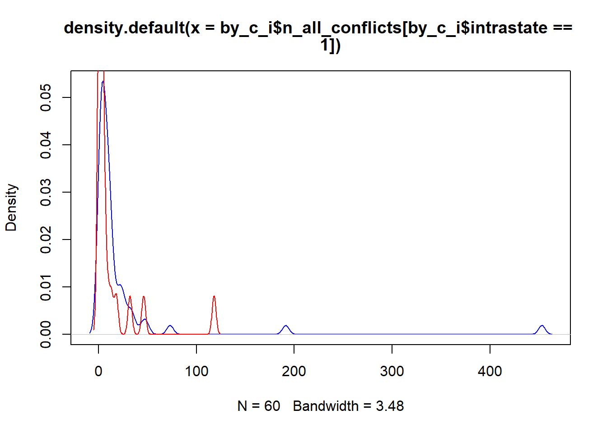
group_by() + summarize() vs. group_by() + mutate()Above, we create grouped data summaries. Notice that only the variables we explicitly specify are retained when first grouping the data and then running summarize().
Sometimes, we want to create grouped variables but retain the remainder of the dataframe. To do so, we can also use group_by() with mutate(). However, this is not appropriate in all situations. For example, if we created a n_conflict variable for each row in the UCDP ACD data, someone looking at our dataframe could interpret this as multiple conflicts attributed to each conflict ID.
pleasedont <- df_new |>
group_by(gwno_a) |>
mutate(
n_all_conflicts = n(),
n_sameyear_conflicts = sum(ep_end)
)arrange()To get an idea of where each candidate stands, let’s reorder the output using arrange().
by_country_arranged <- df_new |>
group_by(gwno_a) |>
summarize(
n_all_conflicts = n(),
n_sameyear_conflicts = sum(ep_end)
) |>
# ordering output
arrange(n_all_conflicts)Ok, that wasn’t very informative. To re-order in descending order, use - before the variable you want the data frame to be ordered by or desc(). Let’s find out who is the candidate with the most average endorsement points
by_country_arranged1 <- df_new |>
group_by(gwno_a) |>
summarize(
n_all_conflicts = n(),
n_sameyear_conflicts = sum(ep_end)
) |>
# ordering output
arrange(desc(n_all_conflicts))At the lower bound, a number of countries have the same number of armed conflicts. We can add a tie breaker by specifying more than one variable inside arrange(). It might already be ordered in this way, but sometimes it’s helpful to explicitly make sure that your data is ordered in the way that you want it to be ordered!
by_country_arranged2 <- df_new |>
group_by(gwno_a) |>
summarize(
n_all_conflicts = n(),
n_sameyear_conflicts = sum(ep_end)
) |>
# ordering output
arrange(desc(n_all_conflicts), desc(n_sameyear_conflicts))slice()Suppose, we only wanted to know who the top 10 countries are in terms of armed conflicts. We can use the slice() function for this.
by_country_top10 <- df_new |>
group_by(gwno_a) |>
summarize(
n_all_conflicts = n(),
n_sameyear_conflicts = sum(ep_end)
) |>
# ordering output
arrange(desc(n_all_conflicts), desc(n_sameyear_conflicts)) |>
# only the top ten
slice(1:10)Finally, lets save the output of our code. This time, we would like to save it in the .dta format because, for some reason, we’d like to look at it in Stata. Let’s load the foreign() library before saving.
library(foreign)
write.dta(df_new, "highest_conflicts.dta")Exercise: Which country (as indicated by the ID variable gwno_a) has the highest number of territorial conflicts, or those with incompatibility concerning the status of a “territory”?
We’ll find out which country corresponds with the gwno_a ID in the next unit!
`summarise()` has grouped output by 'gwno_a'. You can override using the
`.groups` argument.For this exercise, we will be working with UCDP datasets from the peacesciencer package (Miller 2022):
To figure out which countries we’ve been looking at, we will also merge in a dataset with country-level information from the states package developed by Andreas Beger.
Let’s load the three datasets that we will be using, starting with the ACD data that we generated.
ucdp_acd <- peacesciencer::ucdp_acd |> dplyr::rename(gwcode = gwno_a) # side A = country of interest
ucdp_onset <- peacesciencer::ucdp_onsets
states_gwno <- states::gwstatesdplyr for mergingThe dplyr package in R contains a number of functions that allow us to merge data.
Suppose, we have two data frames: x and y. The basic syntax for data merging with dplyr is the following:
output <- whichjoin(x, y, by = "variable")
We will focus on the following four join functions:
full_join(): Join data from x and y upon retaining all rows and values. This is the maximum join possible. Neither x nor y is the “master”.inner_join(): Join only those rows that appear in both x and y. Neither x nor y is the “master”.left_join(): Join only those rows from y that appear in x, retaining all data in x. Here, x is the “master”.right_join(): Join only those rows from x that appear in y, retaining all data in y. Here, y is the “master”.full_join()Suppose we wanted to keep the maximum amount of data in our new merged data set. We would use the full_join() function to merge the grouped-by-country UCDP ACD data with the UCDP Onset data.
names(ucdp_acd) [1] "conflict_id" "year" "gwcode" "gwno_a_2nd"
[5] "gwno_b" "gwno_b_2nd" "incompatibility" "intensity_level"
[9] "type_of_conflict" "start_date" "start_prec" "start_date2"
[13] "start_prec2" "ep_end" "ep_end_date" names(ucdp_onset)[1] "gwcode" "year" "sumnewconf" "sumonset1" "sumonset2"
[6] "sumonset3" "sumonset5" "sumonset10"ucdp_full <- full_join(ucdp_acd, ucdp_onset, by = c("gwcode", "year"))
head(ucdp_full)# A tibble: 6 x 21
confl~1 year gwcode gwno_~2 gwno_b gwno_~3 incom~4 inten~5 type_~6 start_date
<dbl> <dbl> <dbl> <dbl> <dbl> <dbl> <chr> <dbl> <chr> <date>
1 11342 2012 750 NA NA NA territ~ 1 intras~ 1997-05-29
2 11342 2014 750 NA NA NA territ~ 1 intras~ 1997-05-29
3 11343 1967 651 NA 666 NA territ~ 2 inters~ 1967-06-05
4 11343 1969 651 NA 666 NA territ~ 1 inters~ 1967-06-05
5 11343 1970 651 NA 666 NA territ~ 1 inters~ 1967-06-05
6 11343 1973 651 NA 666 NA territ~ 2 inters~ 1967-06-05
# ... with 11 more variables: start_prec <dbl>, start_date2 <date>,
# start_prec2 <dbl>, ep_end <dbl>, ep_end_date <date>, sumnewconf <dbl>,
# sumonset1 <dbl>, sumonset2 <dbl>, sumonset3 <dbl>, sumonset5 <dbl>,
# sumonset10 <dbl>, and abbreviated variable names 1: conflict_id,
# 2: gwno_a_2nd, 3: gwno_b_2nd, 4: incompatibility, 5: intensity_level,
# 6: type_of_conflictnrow(ucdp_full)[1] 12643inner_join()Suppose, instead of retaining as much data as possible, we only wanted to keep data for which we have observations in both data sets. Note that this merging is only done based on the variables that we specify to uniquely identify each observation. Please refer to the Data Wrangling Cheat Sheet for methods that will select based on matching values beyond the unique identifiers (see for example intersect() and setdiff()).
names(ucdp_acd) [1] "conflict_id" "year" "gwcode" "gwno_a_2nd"
[5] "gwno_b" "gwno_b_2nd" "incompatibility" "intensity_level"
[9] "type_of_conflict" "start_date" "start_prec" "start_date2"
[13] "start_prec2" "ep_end" "ep_end_date" names(ucdp_onset)[1] "gwcode" "year" "sumnewconf" "sumonset1" "sumonset2"
[6] "sumonset3" "sumonset5" "sumonset10"ucdp_inner <- inner_join(ucdp_acd, ucdp_onset, by = c("gwcode", "year"))
head(ucdp_inner)# A tibble: 6 x 21
confl~1 year gwcode gwno_~2 gwno_b gwno_~3 incom~4 inten~5 type_~6 start_date
<dbl> <dbl> <dbl> <dbl> <dbl> <dbl> <chr> <dbl> <chr> <date>
1 11342 2012 750 NA NA NA territ~ 1 intras~ 1997-05-29
2 11342 2014 750 NA NA NA territ~ 1 intras~ 1997-05-29
3 11343 1967 651 NA 666 NA territ~ 2 inters~ 1967-06-05
4 11343 1969 651 NA 666 NA territ~ 1 inters~ 1967-06-05
5 11343 1970 651 NA 666 NA territ~ 1 inters~ 1967-06-05
6 11343 1973 651 NA 666 NA territ~ 2 inters~ 1967-06-05
# ... with 11 more variables: start_prec <dbl>, start_date2 <date>,
# start_prec2 <dbl>, ep_end <dbl>, ep_end_date <date>, sumnewconf <dbl>,
# sumonset1 <dbl>, sumonset2 <dbl>, sumonset3 <dbl>, sumonset5 <dbl>,
# sumonset10 <dbl>, and abbreviated variable names 1: conflict_id,
# 2: gwno_a_2nd, 3: gwno_b_2nd, 4: incompatibility, 5: intensity_level,
# 6: type_of_conflictnrow(ucdp_inner) # compare this to the number of rows from our `full_join()` [1] 3777left_join() and right_join()Suppose we had an existing master data set and wanted to add data to this master without adding new rows—just new columns. This could for example be the case if we had a specific time frame that we wanted to study, and only want to merge data which matches the original data.
For the duration of the workshop, we have been working with the ACD data, without procuring information on which countries we were looking at. Let’s merge the grouped-by-country ACD data with the gwstates dataset on country information from the states package.
names(ucdp_acd) [1] "conflict_id" "year" "gwcode" "gwno_a_2nd"
[5] "gwno_b" "gwno_b_2nd" "incompatibility" "intensity_level"
[9] "type_of_conflict" "start_date" "start_prec" "start_date2"
[13] "start_prec2" "ep_end" "ep_end_date" names(states_gwno)[1] "gwcode" "gwc" "country_name" "start" "end"
[6] "microstate" merged_left <- left_join(ucdp_acd, states_gwno, by = "gwcode")
names(merged_left) [1] "conflict_id" "year" "gwcode" "gwno_a_2nd"
[5] "gwno_b" "gwno_b_2nd" "incompatibility" "intensity_level"
[9] "type_of_conflict" "start_date" "start_prec" "start_date2"
[13] "start_prec2" "ep_end" "ep_end_date" "gwc"
[17] "country_name" "start" "end" "microstate" nrow(ucdp_acd)[1] 4164nrow(merged_left)[1] 5020Replacing left_join() with right_join() in the above example would merge the grouped-by-country data into the country-level dataset.
merged_right <- right_join(ucdp_acd, states_gwno, by = "gwcode")
head(merged_right)# A tibble: 6 x 20
confl~1 year gwcode gwno_~2 gwno_b gwno_~3 incom~4 inten~5 type_~6 start_date
<dbl> <dbl> <dbl> <dbl> <dbl> <dbl> <chr> <dbl> <chr> <date>
1 11342 2012 750 NA NA NA territ~ 1 intras~ 1997-05-29
2 11342 2014 750 NA NA NA territ~ 1 intras~ 1997-05-29
3 11343 1967 651 NA 666 NA territ~ 2 inters~ 1967-06-05
4 11343 1967 651 NA 666 NA territ~ 2 inters~ 1967-06-05
5 11343 1969 651 NA 666 NA territ~ 1 inters~ 1967-06-05
6 11343 1969 651 NA 666 NA territ~ 1 inters~ 1967-06-05
# ... with 10 more variables: start_prec <dbl>, start_date2 <date>,
# start_prec2 <dbl>, ep_end <dbl>, ep_end_date <date>, gwc <chr>,
# country_name <chr>, start <date>, end <date>, microstate <lgl>, and
# abbreviated variable names 1: conflict_id, 2: gwno_a_2nd, 3: gwno_b_2nd,
# 4: incompatibility, 5: intensity_level, 6: type_of_conflictExercise: Which country-year has the highest number of armed conflicts based on the data from ucdp_acd and states_gwno?
Sometimes you have to do a work around, like switching to a character first, and then converting the character to numeric. You can concatenate commands: myvar <- as.numeric(as.character(myvar)).↩︎
https://cran.r-project.org/web/packages/.↩︎
ACLED uses the following definition: “A protest describes a non-violent, group public demonstration, often against a government institution. Rioting is a violent form of demonstration,” see Raleigh and Dowd (2015).)↩︎
We will not be covering lubridate today↩︎
Not the best example, but you get the point…↩︎
Note that both the British and American English versions of summarise() and summarize() work!↩︎
Note that if the ep_end variable had missing values, we would need to specify na.rm = TRUE within the sum() function.↩︎